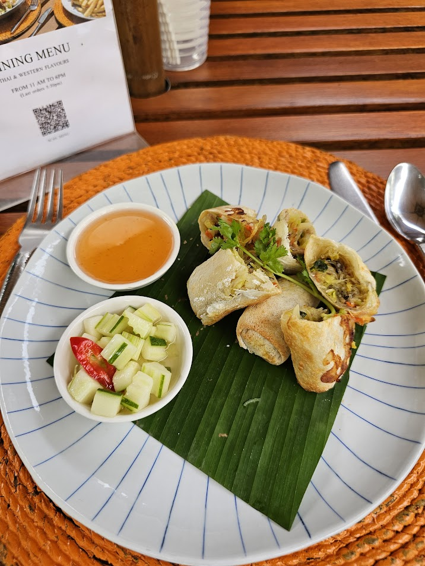
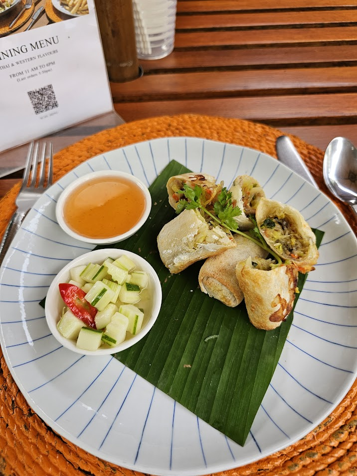

Experiências autênticas
Histórias reais e curadoria de atividades para viver o melhor da cultura local. De tours gratuitos a experiências exclusivas que você só descobre conversando com quem já esteve por lá.
Sabores e rituais em Phuket
Em Phuket, deixei os resorts por algumas horas para viver a cidade: caminhei por mercados noturnos, provei cervejas artesanais tailandesas e pratos carregados de frutos do mar. Entre uma degustação e outra, registrei aromas, cores e brindes em bares cheios de música ao vivo.
 

Balada na marina de Dubai
Nada como sentir Dubai pulsando à noite. A marina vira cenário de néon, yachts luxuosos e DJs. Dancei sob o céu estrelado, caminhei pelas docas e registrei os momentos antes de embarcar para uma festa animada que atravessou a madrugada.
Mística vascaína em São Januário
Visitar São Januário foi mergulhar na história do Vasco. Explorei os detalhes das arquibancadas, vi de perto o gramado e senti a energia da torcida ecoando em cada corredor. Foi um passeio que terminou com fotos emocionadas ao lado das bandeiras e dos símbolos do clube.